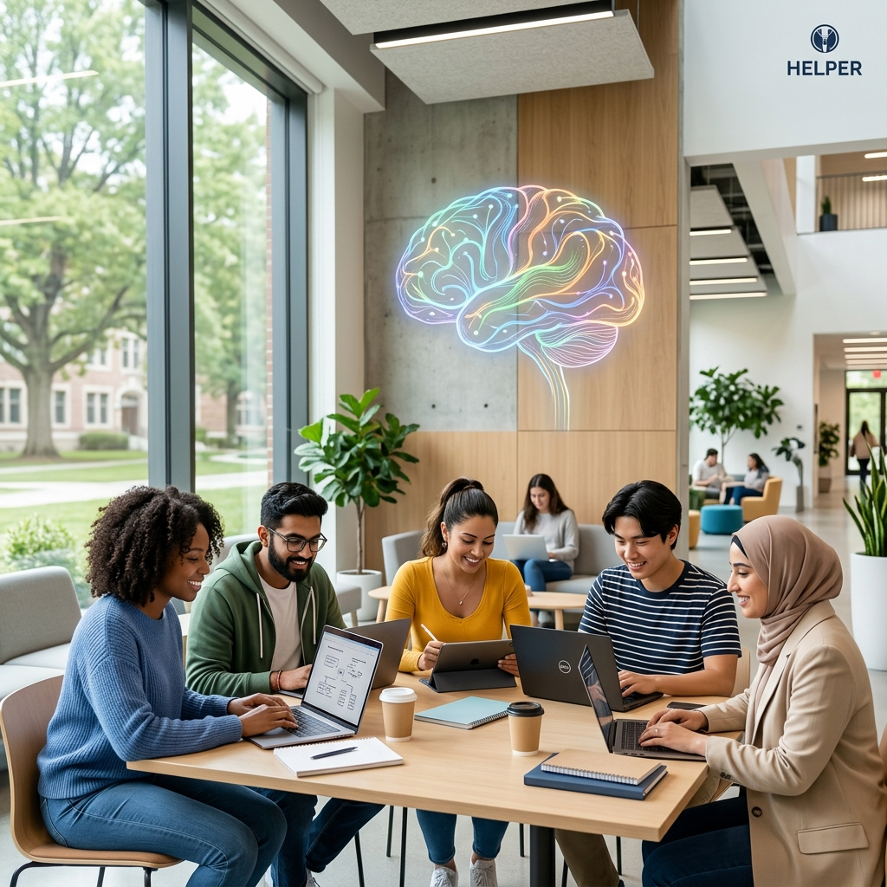

ENABLE — Empowering Neurodiverse Students
Welcome to ENABLE (Empowering Neurodiverse and Accessible Breakthroughs in Learning Environments). Our mission is to transform university digital systems into inclusive spaces where every student can thrive.

About the Project
University digital ecosystems are often complex and overwhelming. For neurodiverse students—including those with ADHD, Autism, Dyslexia, and Dyscalculia—these systems can present significant barriers to learning. ENABLE is a research-driven project focused on identifying these barriers and proposing actionable UI/UX improvements.
Key Objectives
Analyze Barriers
Identify specific digital friction points in university software, from Moodle to Library systems.
Design Solutions
Develop modular UI components like font toggles and contrast modes that can be easily integrated.
Empower Users
Provide students with customizable environments tailored to their unique cognitive needs.
Evaluate Impact
Measure the improvement in learning outcomes and student wellbeing through user testing.